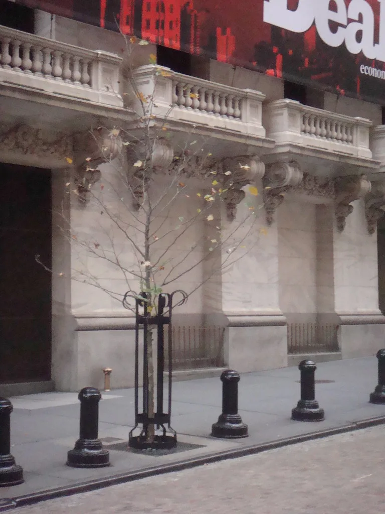
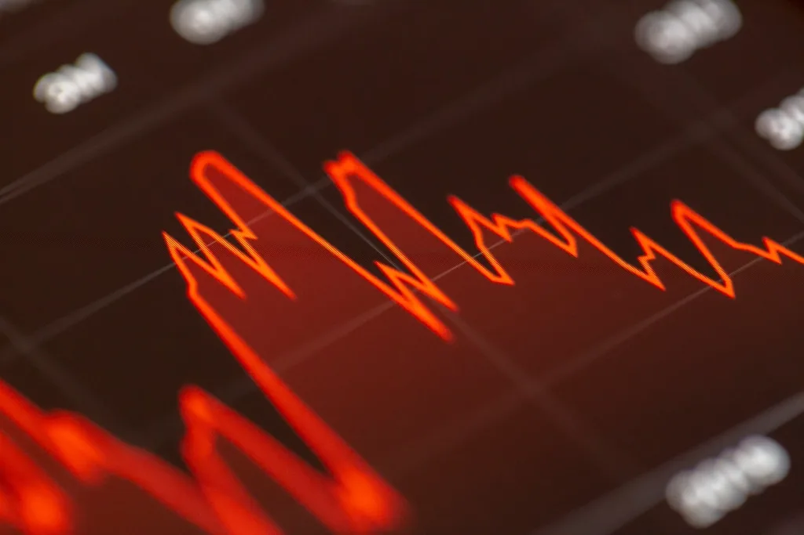

코스피 개장 직후 매도 사이드카…美 물가 충격에 'AI 버블' 경계감 폭발
15일 코스피가 개장과 동시에 5%대 넘게 급락하며 유가증권시장과 코스닥시장에 매도 사이드카가 잇따라 발동됐다. 유가증권시장에서는 오전 9시 7분 42초, 코스닥시장에서는 9시 12분 23초에 각각 발동됐으며, 매도 사이드카는 코스피200 선물가격이 전일 종가보다 5% 이상 떨어진 상태가 1분 이상 이어질 때 자동으로 작동한다. 전날까지 7000선을 넘나들던 지수가 하루 만에 급격히 꺾이면서 시장은 '검은 목요일'이라는 표현까지 나올 정도로 충격에 휩싸였다.
이번 급락의 직접적 계기는 미국의 물가 지표였다. 전날 발표된 9월 소비자물가지수(CPI)가 시장 예상치를 웃돌면서 연방준비제도(연준)가 추가 금리 인상에 나설 수 있다는 우려가 커졌다. 끈적한 물가와 긴축 장기화 가능성이 겹치자 그동안 고평가 논란이 제기돼온 인공지능(AI) 관련주들이 가장 먼저, 가장 크게 흔들렸다.

간밤 뉴욕증시에서도 같은 흐름이 확인됐다. S&P500 지수는 전장보다 1.11% 내린 7718.94로, 기술주 중심의 나스닥종합지수는 1.88% 급락한 26692.86으로 마감했다. 특히 AI 클라우드 인프라 기업 코어위브 주가가 15.46% 폭락했고 오라클도 8.83% 떨어졌다. AI 설비 확장을 위해 대규모 차입을 늘려온 기업들의 부채 부담에 대한 경계감이 번지면서, 코어위브의 채권 가격이 통상 부실 신호로 해석되는 수준까지 밀린 점도 투자심리를 얼어붙게 했다.
국내 증시의 충격은 더 컸다. 코스피 시가총액 상위를 지키는 삼성전자와 SK하이닉스가 이날 각각 7.11%, 9.02% 급락하며 지수 전체를 끌어내렸다. 두 종목은 최근 고대역폭메모리(HBM) 수요 확대를 등에 업고 코스피 상승을 주도해왔던 터라, 이번 급락은 그만큼 반작용도 컸다는 평가다. 외국인 투자자의 선물·현물 동반 매도가 급락 속도를 더 가팔라지게 만든 것으로 분석된다.

이번 급락은 단순한 환율·금리 이슈를 넘어 AI 투자 전반의 수익성 논쟁으로 번지는 양상이다. 그동안 빅테크와 AI 인프라 기업들이 막대한 차입을 통해 데이터센터와 반도체 설비를 늘려온 데 대해, 실제 수익이 투자 속도를 따라가고 있는지에 대한 의구심이 꾸준히 제기돼왔다. 이날 급락은 그 우려가 한꺼번에 현실화된 사례로 받아들여진다. 안전자산으로 꼽히는 금값마저 미국 물가 충격의 여파로 동반 하락한 점도 이례적으로 평가된다.
충격은 한국 증시에만 머물지 않았다. 간밤 뉴욕발 AI주 투매 여파는 아시아 거래 시간대로 이어지며 반도체·AI 인프라 밸류체인 전반의 투자심리를 짓눌렀다. 국내에서는 코스피와 코스닥 양 시장에서 매도 사이드카가 동시에 발동되는 보기 드문 상황이 연출됐고, 개인투자자들 사이에서도 추가 하락에 대한 경계 매물이 쏟아지며 지수 하락 속도를 부채질했다. 증권사 리서치센터에서는 이번 급락을 두고 실적 기반 펀더멘털 훼손보다는 밸류에이션 재조정 성격이 짙다는 분석을 내놓고 있다.
시장에서는 앞으로 발표될 미국의 추가 물가 지표와 연준 인사들의 발언이 반등 여부를 가를 변수로 꼽힌다. 코스피가 올해 반도체·AI 관련주를 축으로 가파르게 상승해온 만큼, 이번 급락이 단기 조정에 그칠지 추세 전환의 신호가 될지는 이어지는 거래일에서 판가름 날 전망이다. 당분간 국내외 증시 모두 높은 변동성을 피하기 어려울 것으로 보인다.